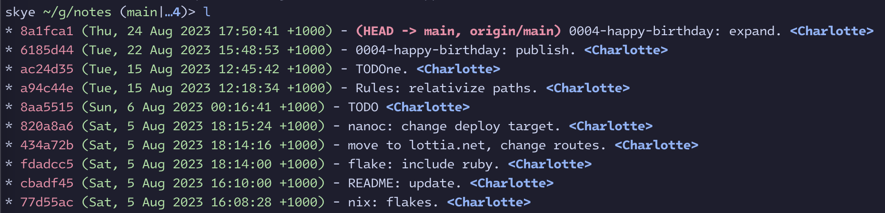
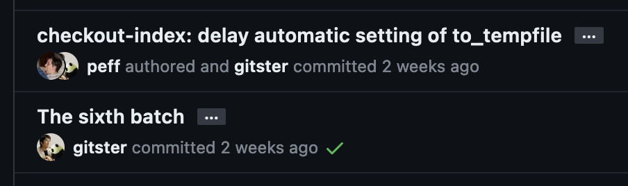
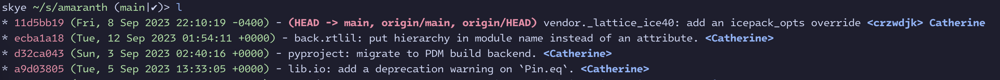

Jambalam
2023-09-18
Have it your way. (Content note for just about everything.)
Further to fish fun in Nix refisited, today I wanted my git log to work a little different.
I have l as an alias for: (I’m going to add a bunch of newlines)
git log
--show-notes='*'
--abbrev-commit
--pretty=format:'
%Cred%h
%Cgreen(%aD)%Creset
-%C(bold red)%d%Creset
%s
%C(bold blue)<%an>%Creset
'
--graphThe output looks like this:

I’m focussing right at the end here: <%an> is what puts <Charlotte> at the end.
an stands for “author name”; you can also do ae for “author email”, and cn and ce
for committer name and email respectively.
Wouldn’t it be nice to see the author and committer here? Of course, if I just change it to
something like <%an> <%cn>, we get this: (detacnurt for clarity)
…0) - (HEAD -> main, origin/main) 0004-happy-birthday: expand. <Charlotte> <Charlotte>
…0) - 0004-happy-birthday: publish. <Charlotte> <Charlotte>
…0) - TODOne. <Charlotte> <Charlotte>
…0) - Rules: relativize paths. <Charlotte> <Charlotte>
…) - TODO <Charlotte> <Charlotte>
In the majority of cases, author and committer are the same. GitHub does a neat thing where it
shows the committer (or Co-authored-by:), but only if they’re different:

Unfortunately(?), git-log’s pretty formats don’t support “show this field only if it’s different to that one”. Maybe that’s a good thing. We’re here to break good things.
Here’s a patch to git that adds %cm and %cf. The naming semantics are “cute”:
m and f are adjacent to n and e. The core addition to format_person_part (grumble) is as
follows:
if (part == 'm' || part == 'f') { /* committer name or email if committer != author */
if (ca_msg != NULL && !split_ident_line(&ca_s, ca_msg, ca_len)) {
ca_name = ca_s.name_begin;
ca_namelen = ca_s.name_end - ca_s.name_begin;
ca_mail = ca_s.mail_begin;
ca_maillen = ca_s.mail_end - ca_s.mail_begin;
if (namelen == ca_namelen &&
maillen == ca_maillen &&
!strncmp(name, ca_name, namelen) &&
!strncmp(mail, ca_mail, maillen))
return placeholder_len;
}
}The outer conditional is hit for all %a and %c and looks for our m and f specifiers; the
middle conditional ensures we’re in %c and that the Author (!) line can be parsed into name and
mail address. Finally, we check that the Committer name and mail match the Author ones exactly. If
so, we return immediately without appending anything to the output buffer. (We shortly thereafter
treat m as identical to n and f as to e, in the case where they’re not matching.)
git show > pretty.c.patch and pkgs.git.overrideAttrs { patches = [./pretty.c.patch]; } gets you
the goods. My alias now has <%an>% cm, meaning it’ll show the committer name (with a space) after
the author name in gtlt, but only if it’s different. Here’s an example of that on Amaranth’s
repository:

I really like this. In a tangible sense, my operating systems are becoming mine.